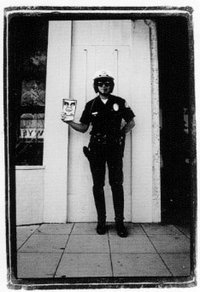

Monica Hoover
From The Giant: The Definitive Obey Giant Site
 |
{kind=link}
{kind=link}
From San Diego CityBEAT:
Monica Hoover and her staff at downtown’s Voice 1156 Gallery weren’t expecting the crowd that turned up for the opening night of Giant vs. Giant on Jan. 7. After the mid-size gallery filled to capacity, they were forced to handle things in fire-code fashion: 10 people out, 10 people in.
By 10 p.m., one hour before closing, Hoover realized the line that extended down Seventh Avenue and around the corner to Broadway probably wouldn’t make it in before closing, so she made an executive decision: she told everyone inside it was time to leave—most people had been hanging out for awhile anyhow—and once the place was cleared, those who’d been waiting patiently in the rain were ushered in to see the latest work by guerilla pop-artist Shepard Fairey and his pal Mike Giant.
For San Diego’s famous expatriate artist, the turnout was a surprise. “Most people in SoCal don’t like to go out in the rain,” Fairey said. In fact, he and Hoover had discussed contingency plans in the case turnout was sparse.
“I’ve never seen an art opening that was as crowded as the one Mike and I had in all of the time I spent in San Diego,” said Fairey.
In the five months it’s been open, Voice 1156 has put on a show each month, and though none have drawn the crowd that Giant vs. Giant did, Hoover and co-curators Mike Maxwell and Neko Burke are filling a void in a local gallery scene that’s neither as consistent nor as progressive as one might hope. Though San Diego has several smart, provocative galleries and art collectives—like the ICE gallery in North Park and Cassius King gallery downtown—for the most part less-established artists and galleries lack the resources to put on regular shows. Promising galleries like the Muse in North Park and District 3 in Golden Hill closed for financial and safety reasons, respectively, while other art venues like Magpie in South Park and RE:UP (formerly the Selective Hearing gallery) and Voz Alta downtown have realized that the best way to make ends meet is to combine a gallery and retail space or, in Voz Alta’s case, a gallery and performance-art space.
Identifying and developing a new market isn’t always easy, said Perry Vasquez, owner of the ICE gallery—it takes some clever marketing and the ability to convince folks that less-established doesn’t mean less-talented.
“In San Diego the gallery scene is thought to be composed of ones that sell bland art...and ones that keep it real, dealing in art for the love of ideas as well as an appreciation for the pure passion we associate with young artists who create from the gut,” said Vasquez. To often “the bland survive while the wolves starve,” he added.
Monica Hoover is a petite, fast-talking East Coast transplant and photographer who’s made a living shooting everything from muddy mosh pits at the first Woodstock revival to high-end fashion for glossy lifestyle mags like Riviera. She had the chance to follow a former employer to a job in L.A. but chose to stay in San Diego because she sees promise in the arts scene.
Hoover attended college in Philadelphia and points to that city’s monthly “First Fridays” event when galleries in Philly’s art district keep evening hours to show off a new exhibit or hold a reception for a featured artist. “People get off work and it’s just something to do,” she said. There’s a map of gallery locations and “people just go from gallery to gallery.”
Hoover would like to see the same thing happen here—she points to North Park’s Ray at Night, an event that showcases the galleries that line Ray Street (just off University Avenue) on the second Saturday of the month until 9 p.m., featuring live music, wine and hors d’oeuvres. And recently several galleries in the so-called Kettner Art & Design District in Little Italy started “Kettner Nights” (next scheduled for March 4).
“We don’t have an art district, per se, in downtown San Diego,” Hoover said, but she’s heard that three galleries plan to open near Voice 1156 this March, and Cassius King and RE:UP are both within walking distance. For now, Hoover schedules all of Voice’s openings on the first Friday of the month. Giant vs. Giant closes on Jan. 28, and on Feb. 4—Hoover’s 29th birthday—a new show, Under These Circumstances, opens.
Hoover, who moved to San Diego in 1999, grew up in Erie, Penn., and attended Drexel University, where she majored in photography and architecture. On a break from school, she followed a friend out to San Diego and, after being turned down for an internship by a number of local architectural firms, she secured a four-month job with well-known San Diego surfer and photographer Aaron Chang. Chang encouraged her to break away from architecture and pursue fine-art photography.
“He’s, like, ‘This architecture stuff is kind of boring. Do you want to do something fun?’ And I’m, like, yeah, absolutely. In the four months I was here working for him, it just changed my whole style,” Hoover said.
Chang also introduced her to the head of marketing for Blk/Mrkt, the visual-arts collective/agency run by Fairey and Dave Kinsey that became known for infusing commercial advertising with an urban ethos that was as much about making a statement as it was about attracting young consumers. Blk/Mrkt held on to its street cred thanks to the well-known fact that while they were doing work for corporate clients like Pepsi and Levis, Kinsey and Fairey never let go of their penchant for “bombing”—aka plastering their street art, like Fairey’s ubiquitous “OBEY” graphic, all over San Diego and cities beyond.
Hoover hung on to her lead at Blk/Mrkt when she returned to Drexel; after finishing her degree, she sent Kinsey her portfolio. Shortly after she graduated, he hired her on as a photographer.
Fast forward five years and there are a lot of similarities between what Blk/Mrkt tried to do in the mid-’90s and what Hoover hopes to do with Voice 1156. Granted, the gallery’s operation is—so far, at least—on a much smaller scale, and Hoover’s a more law-abiding artist than her former employers when it comes to displaying her work. But she wants the art that Voice 1156 shows and creates (the space doubles as a studio for a 15-artist collective) to gnaw at people’s subconscious the same way Fairey’s OBEY cleverly undermined his advertising work.
When Hoover and her crew moved into the gallery space last June, a Seventh Avenue storefront sandwiched between Quiznos and an under-construction bakery, she and her boyfriend Justin Ternes along with a team of volunteers, remodled the space so it could function as both a photography studio and an art gallery, with open wall space and room enough for people to mingle. Hoover says this sort of mixed use is something she’d long dreamed of.
Before opening the gallery, Hoover consulted with Fairey and his wife Amanda, who now run the marketing/design firm Studio Number One in L.A. “I think Amanda’s recommendation was just [to] plan on the gallery not making money and make sure that you have all your expenses covered by other ways you’re going to use the space,” Fairey recalled.
Indeed, Hoover’s rather ambivalent when it comes to the gallery turning a profit. She’s worked full-time as a photographer for the past eight years—her work has always been the backbone of other creative endeavours, she said, and now the photography studio is the backbone of the gallery.
“[It] wasn’t intended to be a money-making venture,” she said of the gallery. “I’m doing it for the community of San Diego, to bring a stronger focus on art—to bring in a younger, more urban, diverse spectrum of artists and expose them to the public.”
There are enough galleries around town that show what Hoover calls “safe art.”
“If anything, I want to develop a niche or just create a buzz,” she said.
The art the gallery shows trends toward the overtly political, such as Giant vs. Giant, to more subdued, narrative-style work by artists like Pamela Jaeger (who’ll be featured in the February show), the Bay Area’s Chris Duncan and Paul Urich or Vancouver’s Human 5 collective, who were featured in Voice’s opening show. When it comes to selecting artists for each month’s show, co-curator Mike Maxwell—an established local artist himself—puts it simply, “I like to show good, solid work by artists who put their heart into what they do and do it well.”
The gallery’s intent is idealistic, yet sincere. Hoover came up with the name after taking a women’s studies class at Grossmont College with respected feminist scholar Sue Gonda. She asked Gonda to help her come up with a name that fit her own personal ethic. “Voice” comes from a quote by suffragist Alice Paul, “A voice is a vote;” 1156 is the gallery’s address.
“Your voice as an artist is your medium,” Hoover explains. “Whatever you choose to do to make a statement.” The gallery’s mantra is “practice creative activism.” Hoover admits she tries to avoid using the word “political” when referring to her art preferences—the term makes some artists uneasy, she said. She prefers work that leans toward social commentary. “I believe for every artist there’s something inside of you…. Maybe it’s your background, your history, something that [compels] you to tell your story in some way."
“A lot of the artists we’re going to bring in here have some kind of story or message,” she explained. “For every show you’ll see a theme [or] a significant message—that’s where ‘Voice’ comes from.”
For now the gallery keeps only daytime hours, 10 a.m. to 6 p.m., Monday through Friday (except for openings) and is open on weekends by appointment. The Voice collective of artists volunteer their time to the gallery—mounting and staffing shows—and Hoover, who calls herself the “den mother” of the group, wants to see her staff use the gallery to network and build their own careers. Ultimately, though, she doesn’t want to limit the gallery to a gathering space for young artists and like-minded creative types.
“As far as bringing in a more conservative crowd, of course that’s what we want to do—educate them and open their eyes to a whole new type of art they’re not used to.”
As for the success of Voice 1156, Fairey says that could, ultimately, depend on whether the city values its emerging art scene. “It’s kind of seen as probably a little bit of an outsider scene,” he said, “compared to a lot of the tame stuff that might be promoted at San Diego Artwalk, but it does represent where the culture’s going and where the demand is going to go.
“For somehow the gallery and the city to cooperate and have what’s going on with that art scene benefit each other,” he said, “I think that would be a smart move.”
Shepard's 2000 print America's Finest was based on a photograph by Hoover.
© Copyright |
|---|
| This page contains an image or images of drawings, paintings, photographs, prints, or other two-dimensional works of art, for which the copyright is presumably owned by either the artist who produced the image, the person who commissioned the work, or the heirs thereof. It is believed that the use of low-resolution images of works of art for critical commentary on the work in question, the artistic genre or technique of the work of art, or the school to which the artist belongs on the English-language website thegiant.org, hosted on servers in the United States, qualifies as fair use under United States copyright law. |